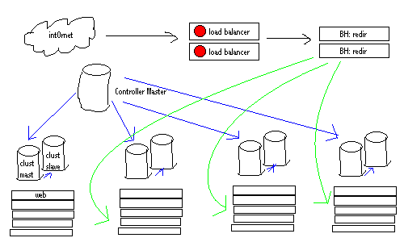

Brad Fitzpatrick & lj_dev crew
The problem is described here. The following solution is a rough draft. Future refinements of this solution are posted below the aforelinked introduction.
The ultimate ideal would be to have LiveJournal to scale linearly with the number of servers we buy. And that's exactly what this aims to do.
The new plan is to have a bunch of indepedent clusters, each with a pool of ~5 web servers and at least 2 database servers. All of a user's data would be confined to one cluster. A new 'clusterid' column in the user table would specify which cluster that user is on. As new users join, we simply build a new cluster and start putting users there, keeping the old clusters running as they were. If people stop using the service, older clusters will free up, so we can put users there.
Before I go further, a picture I whipped up in ViSiO:

What's it all mean?
Cloud -- this is the Internet. It's always drawn as a cloud.
Load Balancer -- this is our pair of BIG/ips... it redirects requests places and monitors servers, etc, etc.
BH: redir -- the logic to redirect a request to a certain cluster is too much work for the BIG/ip. We'll need to do database lookups and stuff from the given user field, which'll be in any one of 10 places. Writing candidacy functions for mod_backhand is pretty easy and can be written in C or Perl. Actually, these machines can be on any/all of the cluster web slaves.... there's no need to have them be physically seperate, but it makes for a prettier abstraction on the above picture.
Cluster Master -- all data about a user that isn't stored on the controller master (site global), will be put on that user's cluster master, where it'll replicate down to the cluster's slave(s).
Cluster Slaves -- will only ever need to:
Maintaining globally unique AUTO values. Without everything in one logical database, the AUTO_INCREMENT columns would have no coordination and multiple clusters could use the same unique IDs for posts, comments, pictures, memories, etc. To prevent this, and to make it easier to delete & move users (move is copy + delete), we need to change all these unique primary key auto columns to be dual column primary keys: (userid, autovalue). You just insert the given userid and a NULL for the autovalue and each userid has its own count. That means that people will no longer have itemids with 9 digits and such... everybody's numbers will unique and small to just them.
Legacy ID snapshot. So as to not break links, we'll need a table to map old unique IDs to the (userid, unique) tuples. When these requests are received, the backhander won't know where to throw it, so it'll throw it to any one, which'll then look up its userid, and HTTP redirect it, so the next request (to, say, /talkread.bml?user=test&itemid=32) will know which cluster to assign it to.
Cache benefit. The coolest thing about this is that the caches on every webserver process and every database server will be a lot more valid. If MySQL needs to pull in 10 pages from disk to find 4 records, we don't have to worry that all that other data on those pages is worthless. Now we know that those other records we now have sitting in memory are also valid for somebody on our cluster. And because we cap the number of users per cluster, we can ensure that the cache performance of a cluster stays the same over time.
RPC between clusters. Obivously there's going to need to be communication between clusters. We started to play with this already, actually ... just wrap DB calls over HTTP. We'll need this to get things like get_recent_items for friends view and getting the text from everything.
It'll be important to request everything that'll be needed to each cluster in one transaction, so as to maintain round trip latencies from serializing a bunch of requests. While the number of clusters is low (~3 - 6) we'll be able to get away with enumerating over the clusters we need to do RPC with and doing the requests one by one. In the future it might be nice to parallelize these requests.
Actually, I'm probably worrying about this too much. We already do dozens of DB calls serialized in places. This'll be faster, as each DB call (albeit over HTTP) will execute faster due to better cache hits.
Another concern you may be having: "But Brad, won't an increased number of users across all the clusters cause a bunch more RPC requests to each cluster, thus diminishing the quality of a cluster, which this whole plan was supposed to address?" Ah, clever you are. Yes, reads will increase to all clusters as total users and total clusters grow. But remember, reads are easy to load balance.. all we have to do is buy more cluster db slaves and spread the reads evenly. So initially we can start with only 1 or 2 cluster slaves per cluster. Once our total number of clusters hits 5-6, it'd be wise to add another db slave to each cluster.
Friends view logic. The userusage table is replicated everywhere, so each cluster will know when their friends updated, and which clusters to do RPC on.
Backhander. The backhander will have to look several places in the HTTP request to determine which cluster to throw it to:
Stats aggregation. Each cluster will have to run its own statistics, and then something on mayor wil have to aggregate those.
recent_* tables. Recent tables could and should probably die.
Moving users between clusters. It'll be easy to move users between clusters. Now that all data is prefixed with the itemid, finding it and deleting it is easy. The only issue is locking which isn't too hard. We can use GET/RELEASE_LOCK on the controller master as a global mutex mechanism.
When might it be necessary to move users? Imagine we're getting heavy growth and we must temporarily overload the newest cluster while we wait for parts from some slow vendor. Once the new cluster is up, we'll want to move users over. Or, consider that users stop using the site over time. It'd be nice to be able to move users from the busiest cluster over to the ones that are dropping in traffic due to users quitting. etc.., etc...
What's where? The major things, at least:
| Cluster | Everywhere |
|---|---|
| log, logprop, talk, logtext, talktext, userpicblob (userpic images) | user, userusuage, generic files, site images |
Directory implications.
(22:39:01) Foobar: So here's a question that may or may not be relevant: how would the directory fit into this?
(22:39:30) Foobar: just query each cluster and aggregate and sort them after they all return?
(22:39:35) brad: basically, yeah
(22:39:53) Foobar: sounds potentially ugly, but I guess it's workable
What cluster do new users go to? The least loaded/newest cluster.
Are there still free/paid servers? We could have a paid cluster, but it seems quite silly, since that paid cluster would have to RPC over to the free clusters. Plus, having a paid cluster would involve moving tons of people each day both back and forth. So the plan is to NOT have seperate clusters, and just make everything incredibly fast. If bandwidth gets too expensive, we could force free users to have an obligatory 30ms latency, which would still be about 3870ms better than what it is now. Please, don't compain about this ... we have no obligation to give away infinite CPU and bandwidth to everybody for free. We realize that free users constitute the overwhelming majority, so free service will always be good (that's our goal), but we want to be able to give paid users a little bit extra always, so if we artificially limit the speed of free access while lower our costs, so be it.
But won't this bring down paid account sales, if free servers are fast enough? Perhaps, but who cares... having shitty service is a poor excuse to profit. We'll make up for the lost sales due to fast servers by offering all the features we've been saying we're going to do forever. Hell, a bunch of them are already 80% written but we've been too busy keeping the site alive. Once the site is permanently alive we can focus on spending time writing fun stuff instead.
So now the BIG/ips don't do much, huh? Yeah, not quite as much. Right now we have a huge ruleset that gets run on the BIG/ip for each request. That'd be simplified quite a bit and the mod_backhand code will do the work now.
This is a lot of tedious work, but it's all very trivial. Luckily though, it's high parallelizable.
Unique ID Split. The first thing that needs to happen is splitting all the unique IDs into (userid, unique) tuples. We can and should put this live after testing before we do the rest. The side benefit is that we'll be able to delete users incredibly easy then, so we'll be able to delete a lot of data before we later move everybody onto their clusters.
Backhander. We need to write the backhander candidacy function. It might be easiest to hire a backhand guru to do it. I know two people that'd probably be down. Otherwise it shouldn't be too hard.
clusterid column. We need to add the clusterid column to the user table, set to 0 for everybody inititally. 0 will mean "the big monolithic cluster", which is how much LJ sites will run. I haven't decided yet if we'll need to special-case 0 to mean no cluster (on the old system) or if it'll just be another cluster, much larger than the others at first.
RPC code. Any code that depends on accessing data from table for a userid that doesn't exist on that cluster will need to be rewritten to do RPC to the appropriate cluster. The main place is friends views. There are a ton of smaller areas, but to begin with we'll replicate a bunch of the <1% slice tables, even though they could later be cluster-only, just to make our lives easier at first.
Ton of testing. We'll need to run test transitions over and over until we're sure it's perfect. I'll be setting up a few machines to simulate different clusters (each with web & db server).
It's time to get serious. I'm sick of dumb hacks. All those dumb hacks were nice, and a large number of them will still be applicable and carry over and benefit us in the new code, but the root problem (dbs sucking over time) needs to be solved.
Please help me out with this. I can't wait until we can just buy 4-6 more machines and put a new cluster online, letting us grow with diminishing the quality of service for the other clusters. I can't wait until I can spend my time programming fun new features instead of just keeping the site alive.
{kind=link}